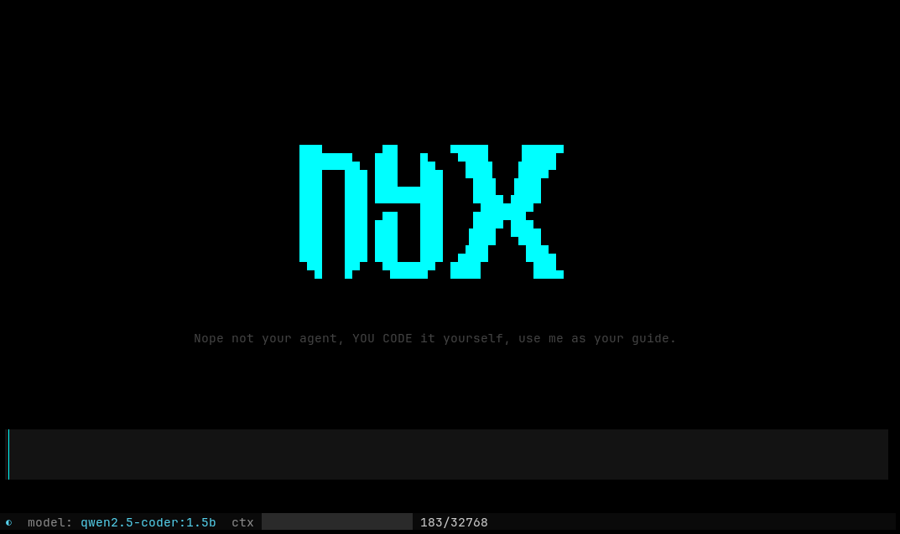

Nyx is an AI harness built with documentation. Use it when you're stuck on syntax, when you want to understand how a language works, or when you just want to learn. You write the code — Nyx is your guide, not your agent.
Runs on Ollama with a model of your choice. Everything stays on your machine.
Browse official DevDocs docsets in the terminal — no browser needed. /docs install python~3.12
Toggle /code to strip all but fenced code blocks. Forces temperature to 0.0 for deterministic output.
Drag-select any text in a doc page and press a to feed it as context. Ask follow-ups with /followup.